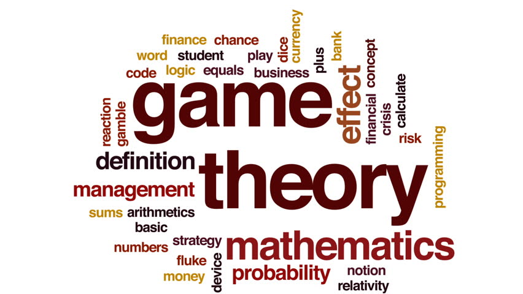

Game Theory: Basics and Limitations
This blog post discusses on a simplified introduction to game theory, revolves around its basic concepts and touches on its limitations.

I often come across quite insightful and engaging topics in different domains that strengthen my understanding and reasoning of the world. Specifically in economics, I find the phenomenon of game theory to be right at the forefront of economic behaviour and computer science. This blog post discusses on a simplified introduction to game theory, revolves around its basic concepts and touches on its empirical limitations. In general, I think this theory really makes us question the mathematical nature of decision making. Make sure to read it till the end because #themoreyouknow!
Introduction
Game theory was developed by John Von Neumann and Oskar Morgenstern in 1944, in their book ‘The Theory of Games and Economic Behaviour’, to explain the strategic interactions among oligopoly firms. Later, Martin Shubik (1959) and John Nash improved its application.
It lays down a rational course of action when the outcomes of the alternative choices available to the decision maker are sometimes known only in probabilistic form. At times, the final outcome of an uncertain situation depends not only upon the actions of the individual in question, but also upon the actions of others who are faced with the similar problem of choosing a rational course of action. In such conflict situations, Game Theory provides the analysis. Instances of such situations are: bilateral monopoly, duopoly and oligopoly as well as situations like wage rate determination and international trade agreements.
Conflict situations involve two or more opponents, each aspiring to optimize his/her own gains at the expense of the other. The rivals involved in such situations interact under the following presuppositions:
- The opponent’s interests are diametrically opposed to his/her own.
- The opponent has all the information necessary to construct the pay-off matrix of the situation.
- The opponent is shrewd enough to choose a wise course of action, if he/she is in the know about the actions of the player.
Game Theory provides a framework for finding either a maximum among a set of minima or the minimum among a set of maxima. The parties involved in the game have incompatible objectives. Even though a game may involve an element of chance, it is essentially a game of skill and so the strategy that each player employs is an important part in the ultimate result of the game. Consider the following illustration: If there are two sellers A and B in a market, A must plan his actions on some expectations of what B will do. In determining his line of action, A must try to find out the worst possible reactions of B. He must, for example, try to achieve the maximum if the minimum is made available to him by B. The solution to such a ‘maximin’ position depends on the joint action of both parties. There is also the additional problem of whether the ‘maximin’ considerations of both parties are consistent with each other.
The games are classified on the basis of two criteria:
- The number of the involved participating firms or persons with conflicting interests. There could be two-person and in general n-person games.
- The net outcome. This criterion distinguishes between zero-sum and non-zero-sum games. A zero-sum game is one in which the algebraic sum of the outcomes are equal to zero for every possible combination of strategies. If the net outcome of a game is different from zero, for at least one strategy combination, it is classified as a non-zero-sum game.
Basic Concepts of Game Theory
i. A Game
It is a situation in which two or more (necessarily a finite number) individuals called ‘players’, confront each other in pursuit of certain conflicting objectives. A game must exhibit the following elements:
- The number of players must be a finite number ‘N’.
- Each of these ‘N’ competitors must have a finite list of possible courses of action open to him/her.
- The list of the possible outcomes need not be the same for each competitor.
- The choices are made simultaneously, so that no competitor knows his/her opponent’s choice until he/she is already committed to his/her own.
- The ‘outcome’ is the result realized by each participant. Each outcome determines a set of payments called ‘payoff’ (positive, negative or zero) to each competitor.
ii. The Strategy
It is a decision rule the player uses to make a choice from the several courses of action that are open to him/her. It may be either:
- ‘a pure strategy’ which is a decision taken in advance of all plays to chose a particular course of action, say X0.
- ‘a mixed strategy’ which is a decision, in advance of all plays, to chose a course of action, say X0, in accordance with some probability distribution.
iii. Two Person Zero-Sum Game
In this case, only two parties are involved in the resolution of the conflict of interest. Depending on the pay-off situation, a game can be classified as either:
- ‘Constant-sum Game’: in this case, the sum of pay-offs of the players, at the end of the play is a constant amount. If the sum is zero, then it is called a ‘zero-sum game’ (in such a case, one player’s pay-off must be the negative of the pay-off of the other).
- ‘Non-Constant-sum Game’: in this case, the sum of pay-offs of the players, at the end of the play (within which numerous strategies were adopted) is not a constant amount.
iv. Payoff Matrix
Table 1
Consider a situation wherein there are players, ‘A’ and ‘B’. If ‘A’ has two strategies available to him and ‘B’ has three strategies available to him, then the total number of outcomes will be (2 x 3 = ) six, as shown by A’s pay-off matrix (Table 1). The cell identified as ‘a12’ shows that if player ‘A’ adopts his/her Strategy 1 and player ‘B’ adopts his/her Strategy 2, then player ‘A’ wins an amount equal to ‘a12’. If this were a zero-sum game, then B’s corresponding pay-off matrix can be shown as (Table 2):
Table 2
v. Maximin and Minimax Principles
From the list of strategies, if player ‘A’ determines the least payoff he/she can receive under each of his/her own strategies and chooses that strategy which has the largest minimum payoff, then he/she has adopted the Maximin Principle.
On the other hand, if from the list of strategies, if the opponent player ‘B’ determines the highest payoff he/she can receive under each of his/her own strategies and chooses that strategy which has the least minimum payoff, then he/she has adopted the Minimax Principle.
vi. Saddle Point
If the strategies of both players and the outcome of the situation are all clearly determinate and the consequence is a strictly determined game, then in such a case, there is an element in the payoff matrix which is simultaneously the maximum of its columns and the minimum of its rows – such an element is called a ‘saddle point’.
- If the payoff matrix has a saddle point, the game has a solution with stable optimal strategies, which are pure strategies.
- If the payoff matrix has no saddle point, the game’s optimal strategies are mixed strategies.
- Note: a game can have more than one saddle point, but all such points must have the same value.
Limitations of Game Theory
- The assumption that players always play safe is unrealistic, as entrepreneurs, by definition, are expected to be dynamic and readily take on risks in uncertain situations.
- Game Theory requires each player to be well informed about not only the market but also of the rival’s various possible strategies. In the real world limited knowledge is an actuality that impacts routine entrepreneurial decisions.
- The theory assumes a constant sum game as every player tries to maximize their individual profits by reducing the rival’s share. In reality, it could be that there is no fixed amount of profits to be shared. It is also possible that the strategy that they ultimately adopt could increase the profits of all the players.
- Game Theory, in the current world, has been providing outstanding theoretical analysis but on the empirical front, its solutions are not pragmatic. This is so since the commercial dynamism in today’s world has become not only highly complex but also too tacit.
Fin.
Let's keep the conversation going
If something here resonated, I'd genuinely like to hear from you.
Get in touch